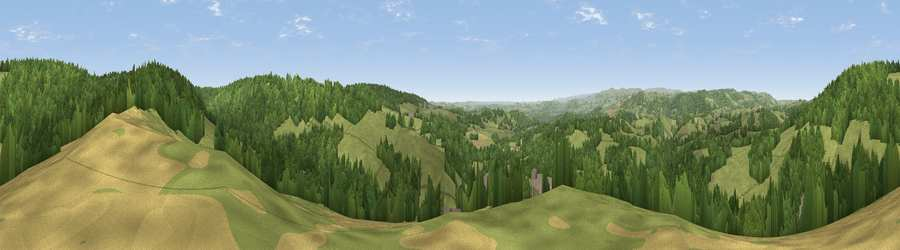

Viewpoint near Chudleigh
#16555 in England · top 31% of its area beats it · near ChudleighThe view, rendered

A 360° render of this exact spot computed from the terrain model, tree cover and land cover — summer colours, afternoon light, calibrated against photographs of famous viewpoints. Real trees, hedges and buildings will differ in detail.
The panorama
Grey silhouette: terrain skyline in each direction (720 bearings, Earth curvature and refraction included). Dashed green: skyline with trees (+15 m) and buildings (+8 m) as obstacles. Blue strip: how far the ground is visible on each bearing.
Where the view opens
Wedge length = distance to the farthest visible ground on that bearing (vegetation-aware). Rings at 10, 25 and 50 km.
What fills the view
49% woodland · 48% grassland · 2% cropland ·
Angular shares of the visible panorama (visual magnitude), not map area. Landscape diversity 0.36 (0–1 Shannon).
Key numbers
More beautiful places nearby
The staircase of upgrades: each row has a higher view potential than everything closer. Driving times are estimates from straight-line distance, calibrated against real road routing — check an actual route before setting out.
| Place | Direction | Drive | Score |
|---|---|---|---|
| Viewpoint near Higher Ashton | NNW · 3 km | ~6 min | 56.4 |
| Viewpoint near Kenn | NNE · 3 km | ~7 min | 61.2 |
| Viewpoint near Kenn | NE · 3 km | ~7 min | 80.0 |
| Viewpoint near Kenton | E · 4 km | ~9 min | 80.7 |
| Viewpoint near Kenton | ESE · 4 km | ~9 min | 82.9 |
| Viewpoint near Holcombe | SE · 8 km | ~17 min | 83.3 |
| Viewpoint near Shaldon | SSE · 12 km | ~22 min | 83.8 |
| Viewpoint near Stokeinteignhead | SSE · 13 km | ~24 min | 84.1 |
50.62680, -3.57669 · source: screening · position refined by local search. Computed location — check access rights before visiting.